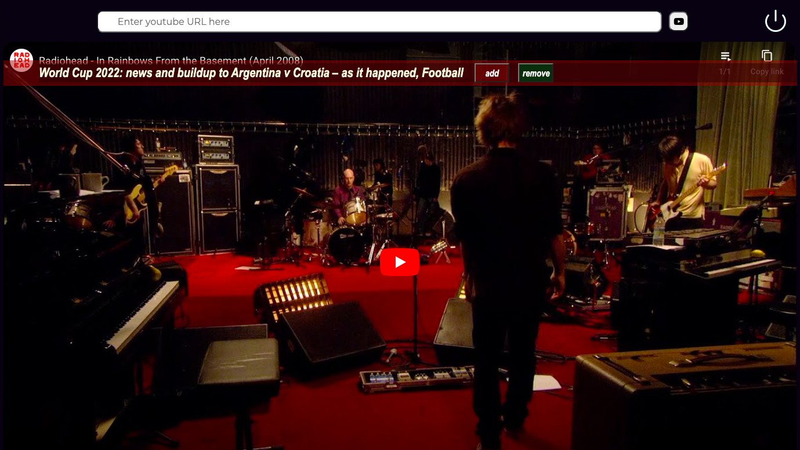
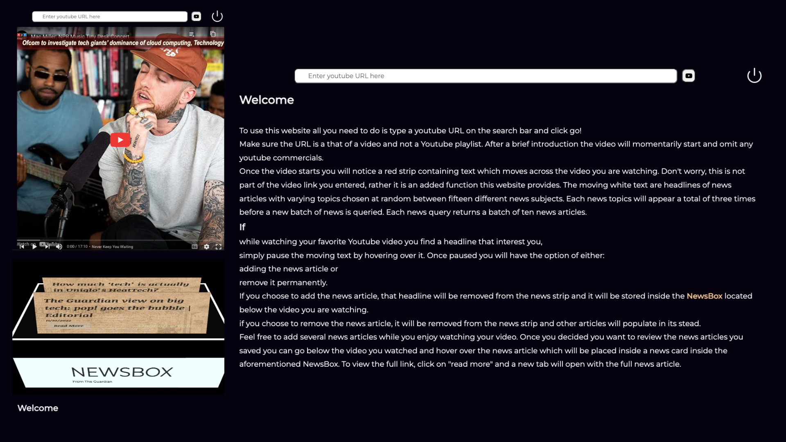

Watch commercial-free Youtube videos and get news at the same time
Do you prefer to watch your favorite youtube video without any interruptions? Are you at times interested or mildly curious about news and current events?
No more having to click ”skip add” during your favorite Youtube video. Avoid that annoying Pepsi zero commercial on TV while getting your news. Imagine not having to minimize full screen to toggle between tabs so you can browse news article you find interesting.
Here you can read the news while simultaneously watching your youtube video. Designed with productivity in mind, this website is created to avoid interruptions, adds, commercials, and all time it takes to search, browse or sort through news. Without any scrolling or tab-toggling simply click on the news snippet you find interesting and save it to read later.
While putting together this website my first challenge was creating a function that can adequately modify the given youTube URL so as to avoid commercials. The next challenge was connecting to a News API whereby the fetch URL is automatically made. I also wanted the news results to be fresh at each query. So I created a function that selects two news topics from a list of fourteen. Chosen at random each query yields different news articles. Each query is made after appearing in the news snippet at maximum of three times. Finally I wanted to avoid having to toggle, scroll or do anyting that can interrupt the flow of the video being watched. So I created a News Container that saves each article that is selected.